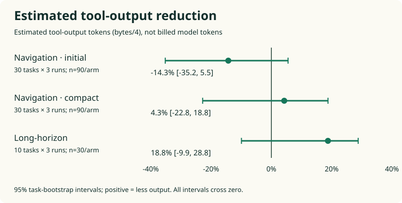
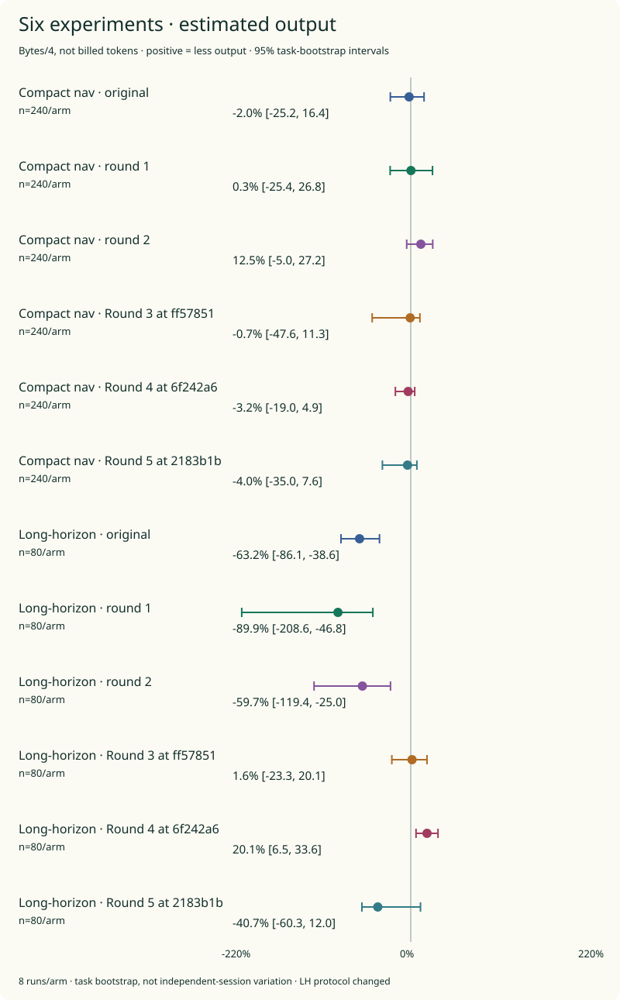
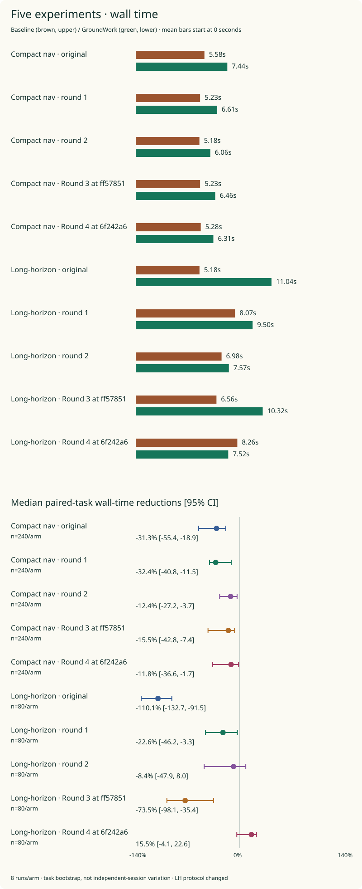
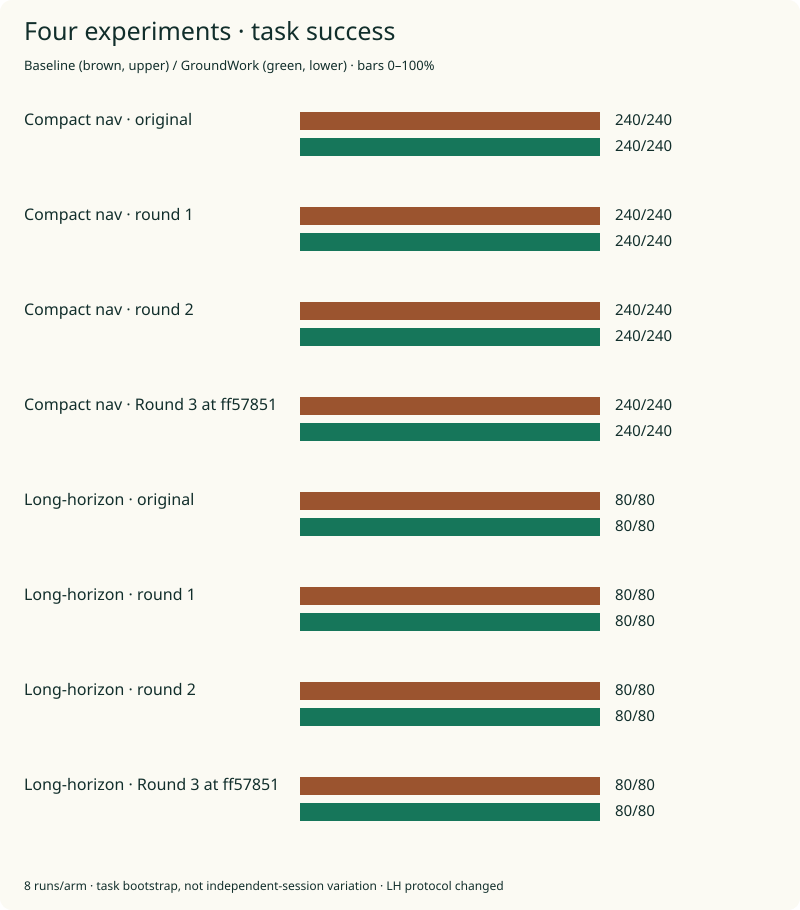

RECORDED DEVIN-AGENT EVIDENCE
Less copied code. Not a promise of savings.
Pre-fix results
Reuse v2 copied-code rate fell from 14/20 (70%) to 0/20 (0%). In the eight-run navigation and long-horizon sets, task success remained identical. Compact navigation showed no statistically significant estimated-output change; long-horizon output increased significantly. GroundWork was significantly slower in both timed suites under the paired-task bootstrap. No billed-token or dollar savings can be established.




Original / round 1 / round 2 overhead experiments
Each experiment contains eight fresh paired runs per task; experiments are not pooled.
Round 1 (v2, e605fe9559cae088a2060a4ed53a27c32daa4df9): LH GroundWork used revised guidance (fewer required calls); navigation guidance was unchanged except the revision. Round 2 (v3, abafcba361f358b61e54fc906977209e494cf07a): the GroundWork arm prompts mirrored the new SKILL.md guidance: rg for trivial lookups, exact-first find_code, actionable-only find_similar, and verify_calls only for unconfirmed cross-file calls. Each round is a protocol change as well as a tool change; baselines were re-collected at that round’s commit. Do not attribute differences solely to implementation changes.
V2 protocol deviations: LH groundwork-4 and baseline-7 were executed by the session’s sidekick subagent using the same wrappers. LH groundwork-3 and groundwork-7 skipped verify_calls despite new cross-file calls. These are recorded executions, not perfectly uniform protocol adherence. The merged code also includes a later verify_calls budget fix for many unchecked files; that fix was not part of the measured e605fe9 runs.
V3 session notes: several GroundWork long-horizon runs skipped find_similar for small shared helpers and made no verify_calls because the targets had already been read, following the new guidance as written. A few sessions had early wrapper failures from incorrect working directories or environment variables; these were retried before work. One navigation GroundWork where_used validation error was not retried, and one navigation GroundWork session read a whole file using shell cat. These are recorded executions, not perfectly uniform tool use; wrapper failures and shell reads should not be silently treated as successful indexed navigation.
| Eight-run suite / experiment | Success, baseline / GroundWork | Estimated-output reduction, median [95% CI] | Mean wall time, baseline → GroundWork | Wall-time reduction, median [95% CI] |
|---|---|---|---|---|
| Compact nav · original | 240/240 / 240/240 | -2.0% [-25.2, 16.4] | 5.58s → 7.44s | -31.3% [-55.4, -18.9] |
| Compact nav · round 1 | 240/240 / 240/240 | 0.3% [-25.4, 26.8] | 5.23s → 6.61s | -32.4% [-40.8, -11.5] |
| Compact nav · round 2 | 240/240 / 240/240 | 12.5% [-5.0, 27.2] | 5.18s → 6.06s | -12.4% [-27.2, -3.7] |
| Long-horizon · original | 80/80 / 80/80 | -63.2% [-86.1, -38.6] | 5.18s → 11.04s | -110.1% [-132.7, -91.5] |
| Long-horizon · round 1 | 80/80 / 80/80 | -89.9% [-208.6, -46.8] | 8.07s → 9.50s | -22.6% [-46.2, -3.3] |
| Long-horizon · round 2 | 80/80 / 80/80 | -59.7% [-119.4, -25.0] | 6.98s → 7.57s | -8.4% [-47.9, 8.0] |
Compact nav · round 1: the estimated-output interval includes zero (no significant change under this analysis); the wall-time interval excludes zero toward slower execution. Compact nav · round 2: the estimated-output interval includes zero (no significant change under this analysis); the wall-time interval excludes zero toward slower execution. Long-horizon · round 1: the estimated-output interval excludes zero toward more output; the wall-time interval excludes zero toward slower execution. Long-horizon · round 2: the estimated-output interval excludes zero toward more output; the wall-time interval includes zero (no significant change under this analysis).
Estimated output is bytes/4, not billed model tokens; no dollar savings are established. Positive reductions mean less output or faster execution; negative means more output or slower execution. Intervals resample paired tasks after summing repeats, not independent sessions. Mean times and median percentage reductions are different estimands. Separate intervals do not test the before/after difference; sequential LH tasks share context.






Methodology: 95% bootstrap intervals resample paired tasks after summing repeats, not independent sessions; sequential long-horizon tasks share context. Protocol deviations were noted per session: some sessions wrote files via the shell wrapper rather than the read wrapper, and one long-horizon agent's first find_similar call failed validation. Results describe these captures, not perfectly uniform protocol executions.
Evidence JSON, methodology and detailed tables → · Reproduce charts offline with npm run bench:charts. Open any chart for a full-size view.